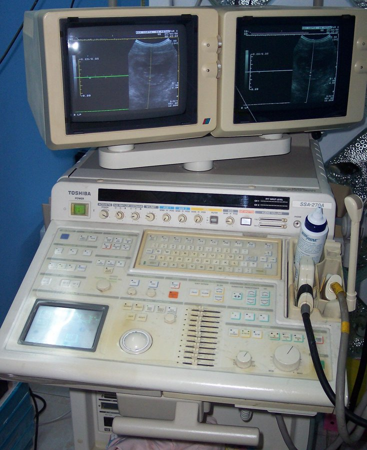

السونار (الموجات فوق الصوتية)Ultrasound
How it works فكرة الجهاز ببساطة
الـtransducer (المِجَسّ) يحوي بلورات تحوّل الكهرباء إلى موجات صوتية عالية التردد (piezoelectric effect).
الموجة تدخل الجسم وترتدّ من حدود الأنسجة أصداءً (echoes)، والمِجَسّ نفسه يستقبلها، والجهاز يرسم الصورة حسب زمن رجوعها وقوتها.
Anechoic: لا صدى = أسود (سوائل: مثانة، كيس). Hyperechoic: صدى قوي = أبيض (حصى، عظم). أما الدهون فلمعانها يختلف، والدهن تحت الجلد غالباً داكن قليلاً.
نحتاج gel لطرد الهواء، فالصوت لا يمرّ جيداً في الهواء. لا توجد أشعة.

⭐ Top 3 points أهم 3 نقاط
- المِجَسّ يرسل الموجة الصوتية ويستقبل صداها.
- السائل بلا صدى (أسود)، والحصى والعظم صداها قوي (أبيض) مع ظل خلفها.
- الجل ضروري لأن الهواء يمنع مرور الصوت، ولا توجد أشعة.